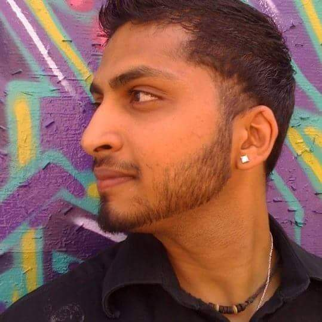

Dough

Roger
Hello. My name is Roger Huba. I am a software developer with
proficiencies in HTML, CSS, JavaScript, and Python. I am and a
US Navy Veteran. I started programming at the ripe old age of 8.
1982 hacking away on my VIC 20 computer programming tank vs UFO.
I was hooked right away. Fast forward 10 years and I found myself
joining the military instead of going to college. I have previous
experience with C++, Visual Basic, and VB.net. I have certificates
in A+, Net+, Sec+, Linux+, Military Instructor, and I am a graduate
of CodeFellows. I am also a life learner having spent over 10 years
in our collegiate system. I hold a bachelors in Computer information
systems with an emphasis on computer forensics, and I hold 2 masters
degrees, the first in information systems management, and the second
in project management.
Saurav
Hello. My name is Saurav. I am a
US Army Veteran. I hold a bachelores degree in Computer Science from South Dakota State University and worked there for 3 years as full stack developer on .Net framework. !!GO Celtics!!
Chai.Narukulla

I have a background in Aerospace,E-commerce and Casino management.
I am looking to apply My new development skills to use an innovative,
user-centric approach to solve problems for others.
I believes that problem solving should be organic, data-driven, and iterative.
In my spare time, you'll find me Watching Cosmos, Cooking, spending time with my dog